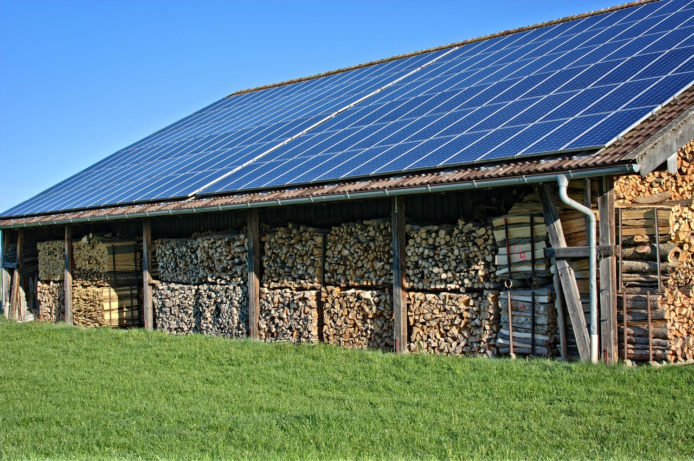
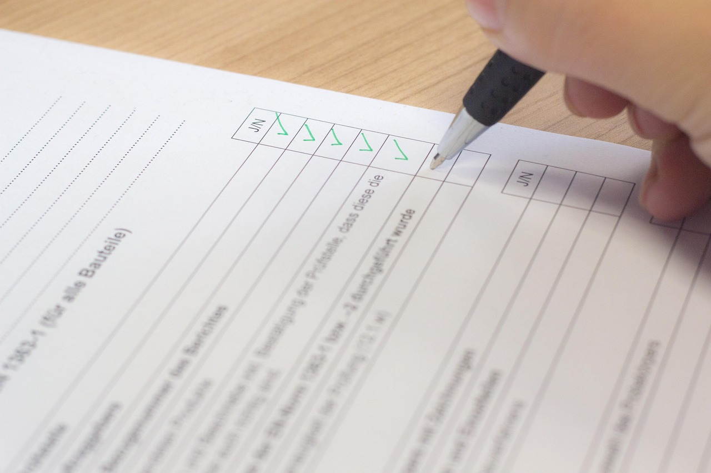

I Nostri Servizi

Valutazioni Ambientali
Supporto per la valutazione di impatto ambientale e gestione delle pratiche normative.

Analisi e Monitoraggio
Analisi ambientali dettagliate e monitoraggi per garantire il rispetto delle normative.

Certificazioni ISO 14001
Consulenza per ottenere le certificazioni di qualità ambientale più richieste.
Cosa Dicono di Noi
"Un team di professionisti competenti e affidabili. Grazie al loro supporto abbiamo ottenuto la certificazione ambientale con successo!"
— Cliente Soddisfatto